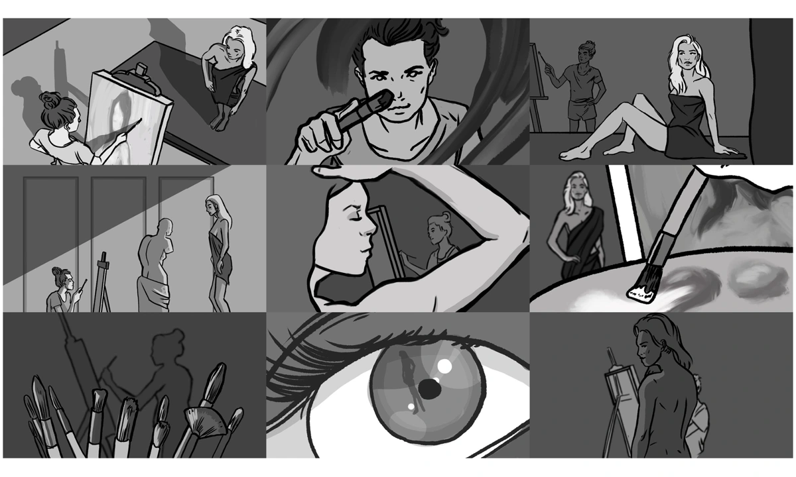

先从五种构图意图中选一个，明确这个镜头要回答什么问题，再用这个标准判断画面有没有奏效。同一句剧本行动可以设计出多种画面；意图明确，做选择时就更有把握。
Use the five compositional intentions to create effective images. When you design your shot to answer one of the following questions, you can verify whether or not your composition is successful by that metric. This allows you to brainstorm multiple images for the same line of script, and feel confident in your outcome.